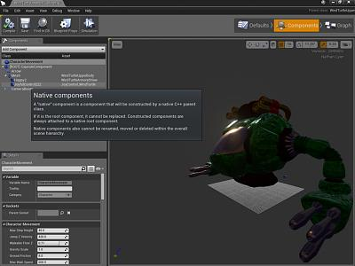

Actor Components, Making Native & Deferred Attached to Socket
Overview
Author: ( )
Dear Community,
Here is my complete code sample for creating and attaching native C++ actor components!

Deferred Attachment
This code follows the Deferred Attachment model, whereby you pick a name and a socket, but the actual attachment occurs after the Character Blueprint has also initialized.
(blueprints are not yet setup during the C++ constructor, and their values cannot be relied on)
.h
//JoyControl
TSubobjectPtr<UStaticMeshComponent> JoyfulControl;
UStaticMesh * AssetSM_JoyControl;
FORCEINLINE void SetupSMComponentsWithCollision(UStaticMeshComponent* Comp)
{
if(!Comp) return;
//~~~~~~~~
Comp->bOwnerNoSee = false;
Comp->bCastDynamicShadow = true;
Comp->CastShadow = true;
Comp->BodyInstance.SetObjectType(ECC_WorldDynamic);
Comp->BodyInstance.SetCollisionEnabled(ECollisionEnabled::QueryAndPhysics);
Comp->BodyInstance.SetResponseToAllChannels(ECR_Ignore);
Comp->BodyInstance.SetResponseToChannel(ECC_WorldStatic, ECR_Block);
Comp->BodyInstance.SetResponseToChannel(ECC_WorldDynamic, ECR_Block);
Comp->BodyInstance.SetResponseToChannel(ECC_Pawn, ECR_Block);
Comp->SetHiddenInGame(false);
}
.Cpp Constructor
//Asset, Reference Obtained Via Right Click in Editor
static ConstructorHelpers::FObjectFinder<UStaticMesh> StaticMeshOb_AW2(TEXT("StaticMesh'/Game/VictoryGoals/Mechs/JoyControl/JoyControl_WindTurtle.JoyControl_WindTurtle'"));
AssetSM_JoyControl = StaticMeshOb_AW2.Object;
//Create
JoyfulControl = ObjectInitializer.CreateDefaultSubobject < UStaticMeshComponent > (this, TEXT("JoyfulControlYay"));
//Set Mesh
JoyfulControl->SetStaticMesh(AssetSM_JoyControl);
//Setup (see .h)
SetupSMComponentsWithCollision(JoyfulControl);
//Deferred Attachment (Ty Nick W.! Actual attach gets done after blueprint stuff)
JoyfulControl->AttachParent = Mesh;
JoyfulControl->AttachSocketName = "JoyControl";
What is Mesh?
Mesh is a great choice for a component to attach to if you are deriving from an ACharacter class.
If not using ACharacter, and if you have a RootComponent for your actor class already,
you can simply replace Mesh with RootComponent
JoyfulControl->AttachParent = RootComponent;
If you are making a new actor class that does not have a RootComponent, then make one of your new components into the RootComponent
RootComponent = YourComp;
Conclusion
Enjoy!
Warning!
AttachParent not available anymore. Use SetupAttachment instead.
( )